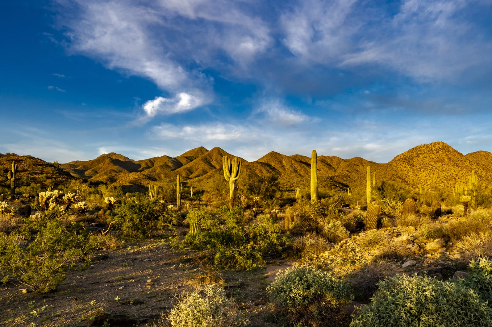
Seja Bem Vindo ao Cerrado
O Cerrado é o segundo maior bioma do Brasil e a savana tropical mais rica em biodiversidade do mundo. Ocupando cerca de 22% do território brasileiro, ele é considerado o "berço das águas" do país, pois suas nascentes alimentam várias das grandes bacias hidrográficas brasileiras. O Cerrado desempenha um papel essencial na ecologia e no equilíbrio ambiental do Brasil, mas também enfrenta grandes ameaças devido à exploração humana..
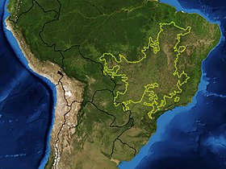
Localização
Centro Brasil.
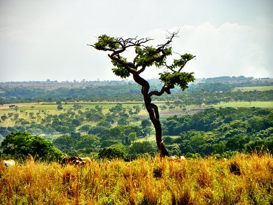
Clima
Tropical sazonal.
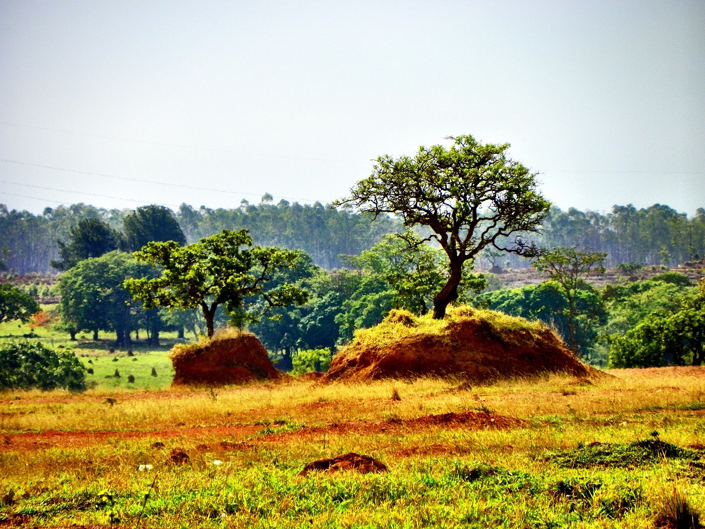
Vegetação
Savana tropical.
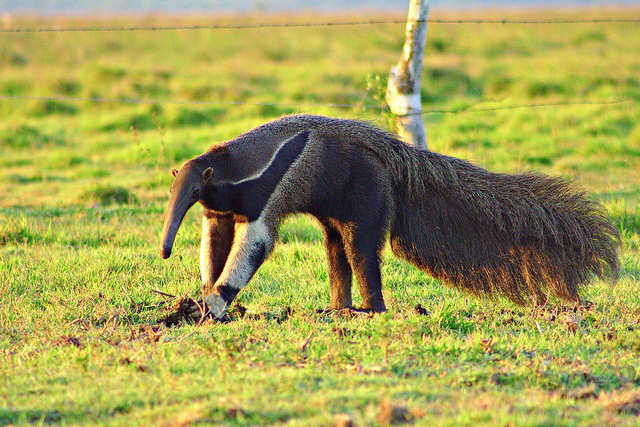
Fauna
Variada abundante.
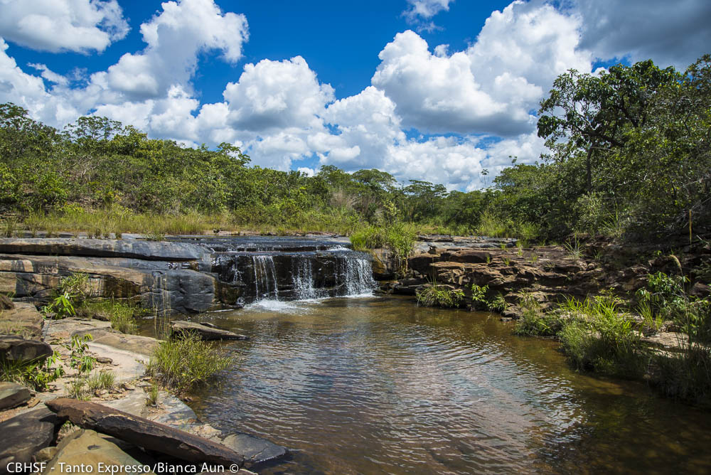
Hidrografia
Aquíferos rios.
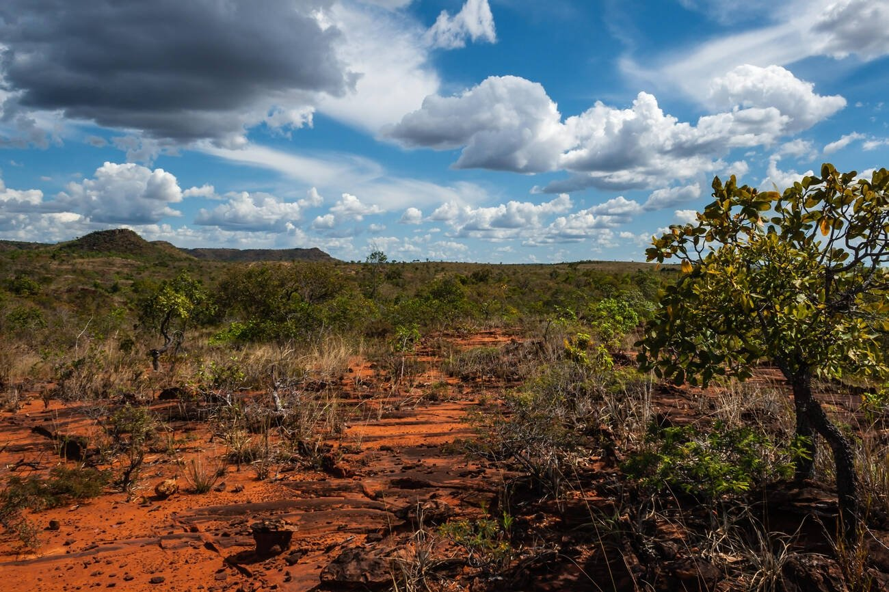
Solo
Areia argila.
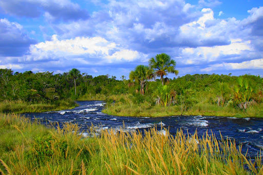
Importancia Ecológica
Comunidades rurais.
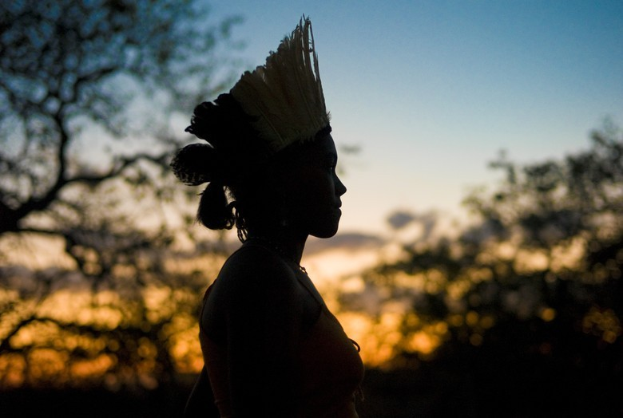
Populações Tradicionais
Quilombolas indígenas.
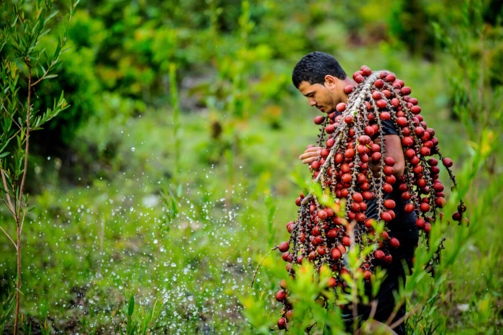
Biodiversidades
Variada abundante.
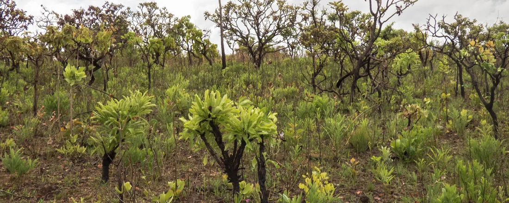
Técnologias Sociais
Barraginhas agro.